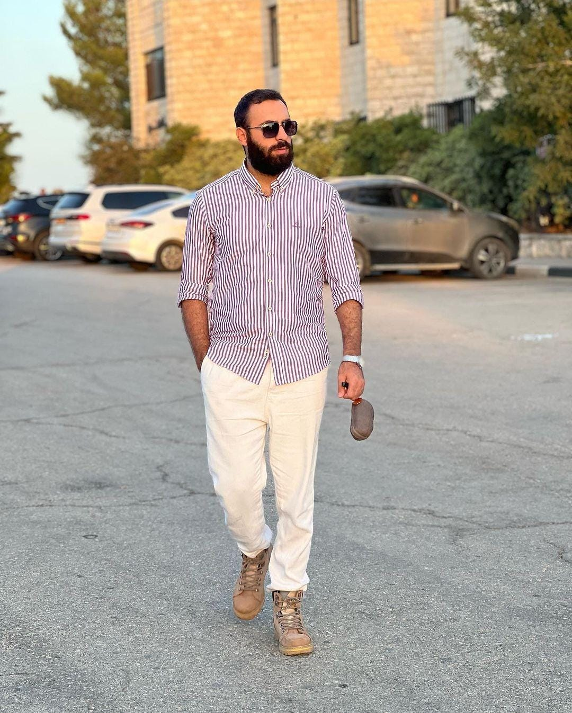
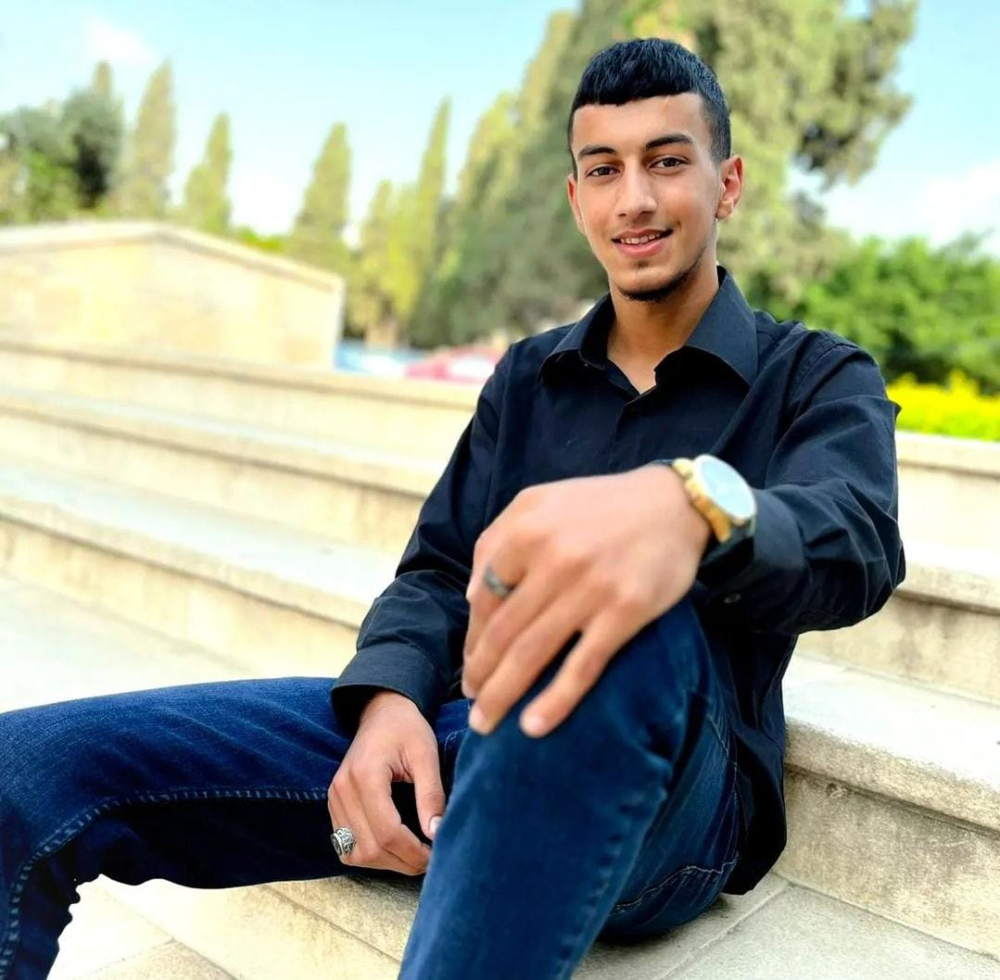

Kareem Qutob 1211756
Ghandy Ghanem 1212386
Qais Ayyash 1213205
~I am a third-year computer engineering student at Birzeit University, actively engaging in a diverse array of projects that span both software and hardware domains. From data structures and Java-based OOP projects to operating system scheduling and computer organization and Verilog for advanced digital systems, my coursework has provided a robust foundation in computer engineering. Outside the academic realm, my interests include reading, watching films and TV, and exploring new topics.
~I am a third-year computer science student at Birzeit University, i have made plenty of projects on various computer science topics such as DSA and DB systems and OOP java-based projects with JavaFX interfaces, i consider myself a free spirit who love to travel and explore the world and try anything new , im also a big football fan who enjoys both playing and watching matches VISCA BARCA!
~Im a third-year computer science at Birzeit University ,throughout my University years i have made plenty of computer sciense realted projects from data structures and algorithms to data bases and AI , in my free time i enjoy reading , chess , playing tennis and dancing dabka.
 